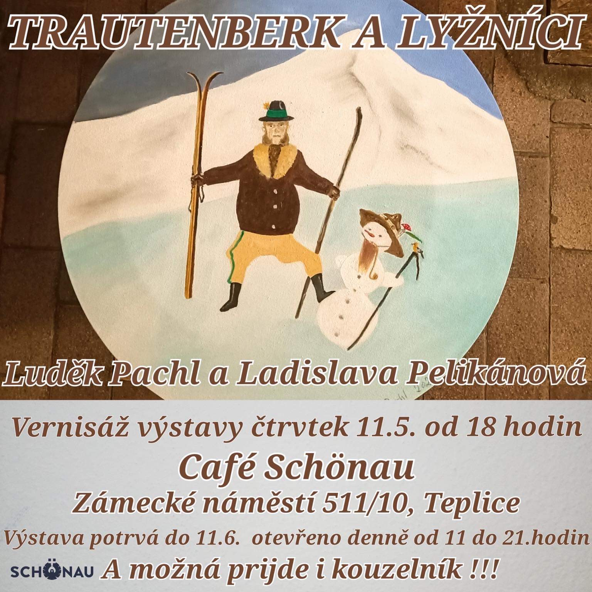
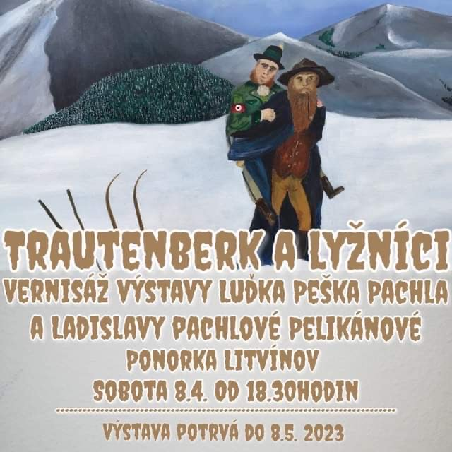
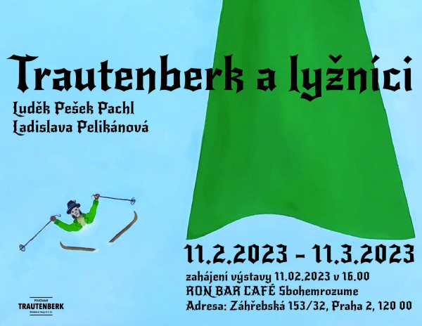

| |
2023 11.5 - 11.6, Trautenberk a lyžníci. Café Schönau, Zámecké nám. 511/10, Teplice

2023 8.4 - 8.5, Trautenberk a lyžníci. Ponorka Litvínov, Podkrušnohorská 1720, Litvínov

2023 11.2 - 11.3, Trautenberk a lyžníci. Ron Bar Café, Záhřebská 153/32, Praha 2

2015 26.6 - 28.6 48 Stunden Neukölln, Cafe Linus Kneipe, Hertzbergstraße 32, 12055 Berlin
2015 5.6 - 19.6 Love & Fetish, at City Hall (B), Karl-Liebknecht-Straße 33/34, 16816 Neuruppin
2015 29.5 - 13.6 art.endart, Vernissage 29.5 at 7pm, Berlin (DE)
2014 1.10. – 16.11. Schokolade trifft Kunst, Programm, Berlin (DE)
2014 1.6. – 6.6. 12.OpenAirGallery 2014, Berlin (DE)
2012 14.8. – 13.9. Gallery Radniční
sklípek, Litvínov (CZ)
2012 10.4. – 5.5. Klubovna 2.PATRO,
Prague (CZ)
2012 3.3. - 31.5. Kater Mikesch, Berlin
(DE)
2011 23.6. - 26.8. Gallery U Radnice, Tábor (CZ)
2011 30.4. Jošt 2011, Brno (CZ)
2011 26.3. - 14.4. Factory Leathers Club, Berlin, (DE)
10/11 5.11.2010 - 15.1.2011, Tribo
tattoo studio & gallery, Prague (CZ)
2010 9.6. - 22.6.
Botschaft der Tschechischen Republik, Berlin (DE)
2010 4.1. - 28.2. Americke centrum, Plzen (CZ)
2009 18.6. - 23. 6. Project Write The Wall, Berlin (DE)
2009 18.6. - 23. 6. Galerie Mánes, Prague
(CZ)
2009 3.4. - 30. 4., Galerie Hygienicka Stanice, Prague
(CZ)
2009 10. 1. - 30. 1. , Galerie ZERO, Berlin (DE)
08/09 5. 12. 2008 - 31. 1. 2009, Galerie
Hygienicka Stanice, Prague
(CZ)
08/09 10. 12. 2008 - 5. 1. 2009, Tiki Heart Cafe, Berlin (DE)
2008 1. 11. - 23. 11., Querschnitt 21, Bethanien/Kreuzberg,
Berlin (DE)
2008 31. 10. - 31. 11., Galerie Hygienicka Stanice, Prague (CZ)
2008 15. 10., Galerie Zia Maria, Berlin (DE)
2008 3. 6. – 14. 9., Veletrzni palac - National Gallery,
Prague (CZ)
2008 16. 5. - 17. 5., Tattoo Convention, Prague
(CZ)
2008 17. 4. - 15. 5., Tribo tattoo
studio & gallery, Prague (CZ)
2008 11. 4. - 9. 5., Galerie Superplan, Berlin (DE)
2008 29. 3., Galerie XXL, Louny (CZ)
07/08 5. 12. 2007 - 11. 1. 2008
Saarländische Galerie, Berlin - Mitte (DE)
2007 8. 12. -
9. 12.,
Czech ART Festival,
Ceske Budejovice (CZ)
2007 10. 11. - 2.
12., Querschnitt 20, Haus Bethanien, Berlin (DE)
2007 15. 11., Nu´uanu Gallery,
Honolulu, Hawaii (USA)
2007 13. 6. - 15. 6., Mystic Skate Cup, Stvanice, Prague
(CZ)
2007 22. 6. - 24. 6., 48 stunden Neuköln, Berlin - Neukölln
(DE)
2007 17.4. - 1.6.,
Gallery ART
FACTORY, Prague (CZ)
2006 27.10.- 12.11., Galerie AVENTINSKA MANSARDA,
Prague (CZ)
2006 3.6. - 30.6. c.k.Solnice, Ceske Budejovice (CZ)
2006 23.6 - 25.6., 48 stunden Neuköln, Berlin - Neukölln
(DE)
2006 5.5. - 30.5., Cistercian Monastery Osek (CZ)
2006 11.1. - 12.2., TACHELES - Cafe Zapata, Berlin
(DE)
2005 9.11. - 11.11., Art Fusion Tattoo Convention, Arena Treptow, Berlin
(DE)
2005 26.8. - 9.9., Galerie Wallywoods, Kreuzberg, Berlin
(DE)
2005 2.7. - 16.7., Kraut´s Cafe, Berlin
(DE)
2005 10.6. - 12.6., 48 stunden Neukölln, CAFE LINUS, Berlin
(DE)
2004 12.10. - 10.11., Galerie Pisecka Brana, Prague - Hradcany, (CZ)
2004 June - September, Galerie Modry Hrozen, Litvinov, (CZ)
2004 Juni, 48 stunden Neuköln, Berlin - Neukölln
(DE)
2004 Mai, Leander Cafe, Potsdam (DE)
2003 Voodoo Galerie, Berlin (DE)
2003 Kulturfestival "prag-o-mania", Dresden
(DE)
2003 September, Kunstfestival Spektrale, Berlin - Friedrichshain
(DE)
2003 June, 48h Neukölln, Berlin - Neukölln
(DE)
2003 March, Mad & Crazy, Berlin - Prenzlauer Berg
(DE)
2003 February, Semtex, Berlin - Friedrichshain
(DE)
2002 October, Franken, Berlin - Kreuzberg
(DE)
2002 June, Der Club, Berlin - Prenzlauer Berg
(DE)
2002 May, La Fabrique, Berlin - Friedrichshain
(DE)
2002 Galerie Engler & Pieper, Berlin - Prenzlauer Berg
(DE)
2001 Galerie Kunststück, Berlin - Prenzlauer Berg
(DE)
2001 Therezienstad (CZ)
2000 Acud Galerie, Berlin - Prenzlauer Berg
(DE)
2000 Drugstore, Berlin - Schöneberg (DE)
1997 Teilnahme an einem internat. Kunstprojekt in Toulouse (F)
1996 Litvinov (CZ)
1995 Most (CZ) |
|